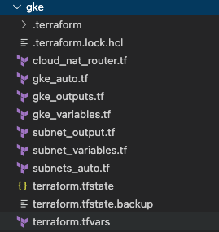
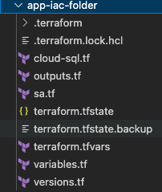
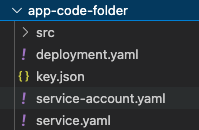
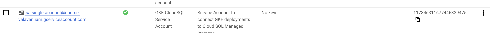
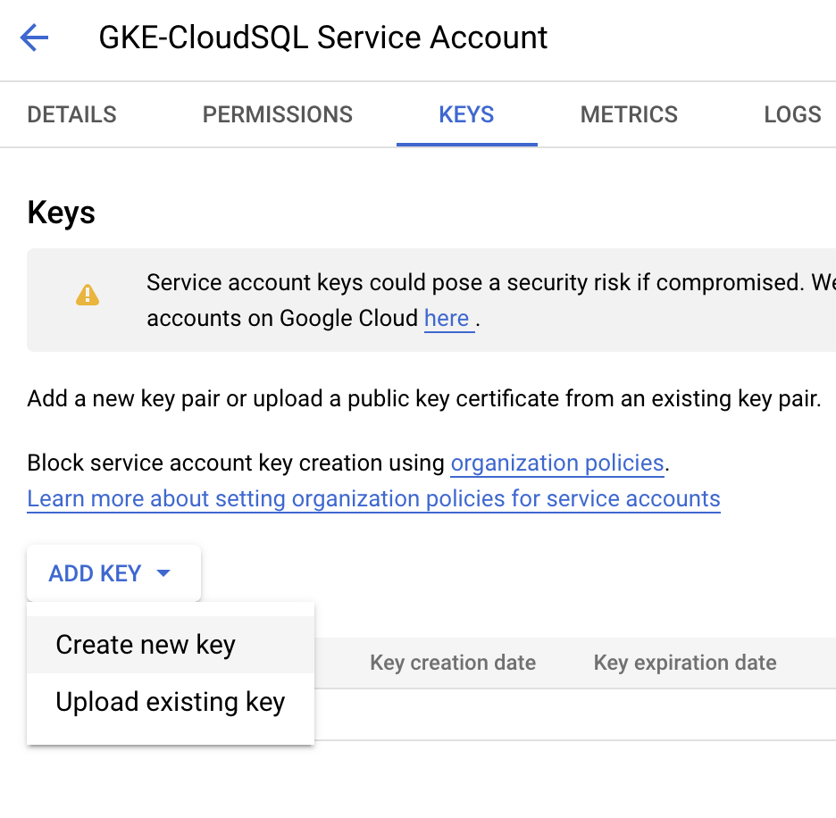
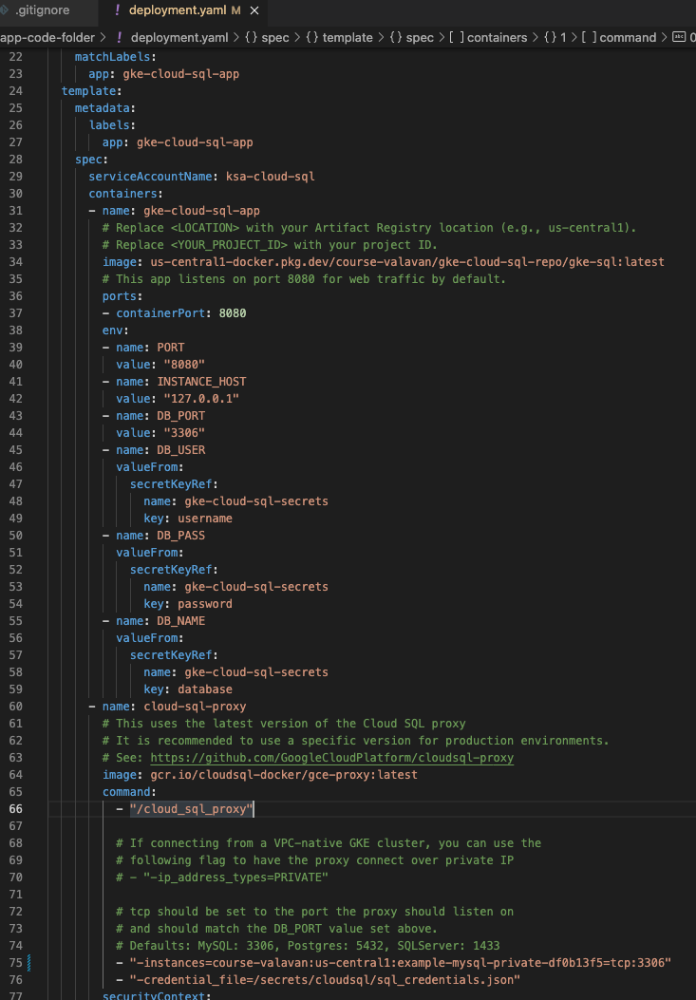
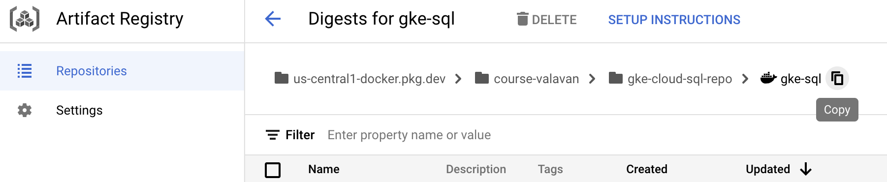
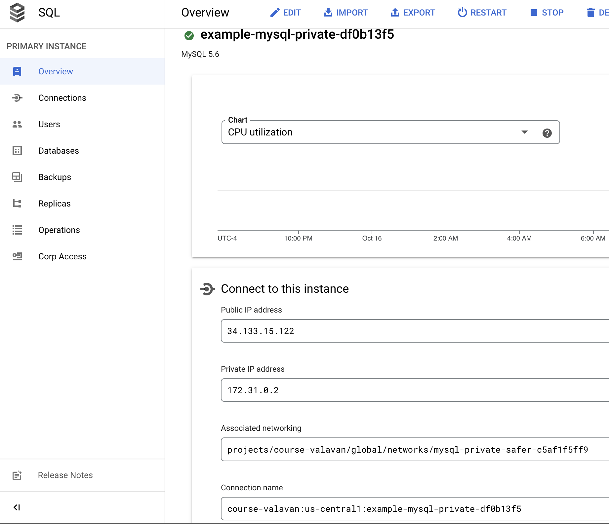

Assignment 5 Deploying Cloud SQL Database and Connecting from GKE¶
Objective:
- In this lab, we will be focusing on deploying Cloud SQL instance first on GCP using Terraform
- Next we will look at configuration changes required in GKE deployment to connect to Cloud SQL instance
- Deploy a sample application in GKE which will be using Cloud SQL as the backend database
1.1 What is CloudSQL?¶
CloudSQL is a Fully managed relational database service for MySQL, PostgreSQL, and SQL Server with rich extension collections, configuration flags, and developer ecosystems.
1.2 Key features¶
Business continuity - Ensure business continuity with reliable, fault-tolerant and secure services managed by Google SRE team
Automation - Automate database provisioning, storage capacity management, and other time-consuming tasks
Observability - Database observability made easy for developers with Cloud SQL Insights
Integration - Easy integration with existing apps and Google Cloud services like GKE and BigQuery
Assignment¶
You will be performing the following steps in Cloud Shell. Launch Cloud Shell from Google Cloud Console
Step 1 Cleanup any previous resources created in the project, including
-
Goto > Kubernetes Engine > Delete all clusters
-
Goto > VPC Networks > Delete any custom VPC network
-
Goto > Cloud Router > Delete any Router
-
Goto > Cloud NAT > Delete any Cloud Nat Config
We will be creating all of these resources using Terraform configuration
Step 2 Ensure that your cloud shell is set to the correct GCP Project
gcloud config set project <PROJECT_ID>
Activate all the api's which we will be using in the current assignment
gcloud services enable compute.googleapis.com sqladmin.googleapis.com \
container.googleapis.com artifactregistry.googleapis.com cloudbuild.googleapis.com servicenetworking.googleapis.com
Step 3 Clone the following gitlab repository to your Cloud Shell, which going to use for our work:
git clone https://github.com/Cloud-Architects-Program/ycit020_2022.git
cd ycit020_2022/cloud-sql/
Step 3 Understand the folder structure
We have segregated the entire deployment and configuration into 3 three different folders
-
gke- represetnts the configuration requitred to spin up VPC Networks, Cloud NAT, Router and GKE AutoPilot configuration. In a typical organization, most of these would be done by the platform administration team as they plan the subnet allocation to be used for Cluster. They also set the allowed GKE features to be used 
-
app-iac-folder-
represents all the Infra-Services that will be required to stand up the application. If your application requires CloudSQL, Memorystore/ Redis, Queueing system like Pub/Sub, Secret Manager, Alerting and Monitoring Configruration will all be declraed here
-
In this case, all of the configuration was built using Terraform, but you can use any other tool like Cloud Connector, Pulumi, Gcloud commands to do these 
-
-
app-code-folder- has the Kubernetes Configs for your application deployment
srcfolder has the application code required to build the container image 
Step 4 Deploy the GKE autopilot configuration using Terraform in a custom VPC
cd gke
Review the terraform.tfvars file for all the variable names used for cluster creation, network creation. Below are the sample values used in the Terraform
enable_private_nodes = "false"
auto_master_ipv4_cidr_block = "172.16.0.16/28" # IP Range to be used by Google Managed Kubernetes Master Nodes
kubernetes_version = "1.22.12-gke.300" # From GKE Cluster requirements
release_channel = "regular" # Release Channel Configuration
org = "<STUDENT>" # Values will be used for VPC and GKE creation
product = "notepad" # Values will be used for VPC and GKE creation
environment = "dev" # Values will be used for VPC and GKE creation
gcp_project_id = "<PROJECT_ID>" # GCP Project ID
gcp_region = "us-central1" # GCP Region
network_auto_cidr = "10.131.0.0/24" # GKE Node Range IP Address
pods_auto_cidr = "10.1.0.0/16" # GKE Pod Range IP Address
services_auto_cidr = "10.100.2.0/23" # GKE Service Range IP Address
Once the configuration has been updated to suitable values for gcp_project_id and org, you can perform the following steps
terraform init
terraform plan
Review the terraform plan to check if there are any additional resources that are being modified or destroyed.
Plan: 5 to add, 0 to change, 0 to destroy.
Changes to Outputs:
+ endpoint = (known after apply)
+ id = (known after apply)
+ master_version = (known after apply)
+ subnet_auto_selflink = (known after apply)
+ vpc_network_name = (known after apply)
+ vpc_network_self_link = (known after apply)
If all the previously deployed reources were all deleted, then the plan should only show new resources would be getting created. Upon verifying the plan output, you can apply the changes
terraform apply
Step 5 Connect to Autopilot cluster
clustername=$(terraform output gke_cluster_name | tr -d '"')
gcloud container clusters get-credentials $clustername --region us-central1
Once you have successfully connected to the cluster, you can perform the following commands as verification steps
kubectl get nodes ## will display the node names
kubectl get pods ## will reutrn empty
Step 6 In this step you will be creating a MYSQL CloudSQL instance which will be used to host the database, using Terraform module.
cd ..
cd app-iac-folder
Review the cloud-sql.tf configuration.
-
The
networkandprivate-service-accessmodule are sed to create a Private network to host Cloud SQL database and a VPC Peering connection to the project -
The
additional_databasessection is used to define new databases to be used for application -
The
additional_usersection is used to provide username and password authentication for the database.
Important
Make sure to modify the password provided to your choice.
Remember to update the `project_id` in the `terraform.tfvars` file.
Run the Terraform Script for Creating MySQL server and Provide the GCP service Account with Cloud SQL permissions
terraform init
terraform plan
Review terraform output to see the resources that will be created
Plan: 16 to add, 0 to change, 0 to destroy.
Changes to Outputs:
+ mysql_conn = (known after apply)
+ mysql_user_pass = (sensitive value)
+ name = (known after apply)
+ private_ip_address = (known after apply)
+ project_id = "<PROJECT_ID>"
+ public_ip_address = (known after apply)
+ reserved_range_address = (known after apply)
+ reserved_range_name = (known after apply)
Once you reivew the resources to be created and looks good, apply the terraform
terraform apply
Output:
mysql_conn = "course-valavan:us-central1:example-mysql-private-a9aca803"
mysql_user_pass = <sensitive>
name = "example-mysql-private-a9aca803"
private_ip_address = "10.34.0.2"
project_id = "<PROJECT_ID>"
public_ip_address = "x.x.x.x"
reserved_range_address = "10.34.0.0"
reserved_range_name = "google-managed-services-mysql-private-safer-a8bb20d40c"
Verify the retuned SQL Connection ID , Public & Private IP Address , VPC Services Peering range on the terraform output
At this point, you can review the Cloud SQL instance created in Console.
-
Navigate to the Database Section to review the new databases created
-
Navigate to the Users Section to review the username created to access the database
Step 7 Obtaining Service Account key file
In the Terraform configuration, a Service account for the application with Cloud SQL client permissions are also created.
The configuration is listed in the sa.tf file.
Navigate to Service Accounts Page in Console

Important
After this step, you will download the service account JSON key from Console to your computer. Please note the path where the file is downloaded. You will need it in the next steps**

Step 8 Applicaiton build and deployment
cd ..
cd app-code-folder
Create Artifact repo
gcloud artifacts repositories create gke-cloud-sql-repo \
--repository-format=docker \
--location=us-central1 \
--description="GKE Quickstart sample app"
gcloud auth configure-docker us-central1-docker.pkg.dev
Build the application image from Code and push it into the artifact repository. Replace the PROJECT_ID in the config below
gcloud builds submit --tag us-central1-docker.pkg.dev/<PROJECT_ID>/gke-cloud-sql-repo/gke-sql src/
Step 9 Create secret for DB - hostname, username, password, Service Account.
Important
In the Password field here, you will provide the same password used in the cloudsql.tf configuration file in the app-iac-folder
kubectl create secret generic gke-cloud-sql-secrets \
--from-literal=database=quickstart-db \
--from-literal=username=quickstart-user \
--from-literal=password=PaSsWoRd
A successful output of the above step should have secret/gke-cloud-sql-secrets created.
Copy the path for the downloaded service account key.
In the next step, inject the service account key as a secret by poiting to the downloaded file. In the command below, replace the key.json with the actual path for the key
kubectl create secret generic sql-credentials --from-file=sql_credentials.json=~/Downloads/key.json
A successful output of the above step should have secret/sql-credentials created
Task¶
Step 10
Modifying lines 34 and lines 75 in the deployment.yaml file to our desired configuration

Task 1
- Modify the image name on line 34, the image name should include an image from your project's artifact registry which you built on Step 8. You can find the image name in the artifact registry. You can copy the image name by hitting the
copylink as shown in the image below

Task 2
- Modify the instances configuration on line 75. The instance name should represent the CloudSQL instance name you created in the previous step. You will find this in the Cloud SQL instance page. You will look for
connection nameas highlighted in the image

Step 11 As a final step, you can now run the deployment and service yaml
kubectl apply -f service-account.yaml
kubectl apply -f deployment.yaml
You should be able to see the Deployement in the Kubernetes Cluster
kubectl get pods
kubectl describe pods
Events sections will show if both containers started without any crashes
Events:
Type Reason Age From Message
---- ------ ---- ---- -------
Normal Scheduled 27s gke.io/optimize-utilization-scheduler Successfully assigned default/gke-cloud-sql-quickstart-54f464d4cc-rkkb8 to gk3-gke-auto-valavan-not-nap-i8jmtam0-15cdcc58-c9g6
Normal Pulling 26s kubelet Pulling image "us-central1-docker.pkg.dev/course-valavan/gke-cloud-sql-repo/gke-sql:latest"
Normal Pulled 25s kubelet Successfully pulled image "us-central1-docker.pkg.dev/course-valavan/gke-cloud-sql-repo/gke-sql:latest" in 243.900462ms
Normal Created 25s kubelet Created container gke-cloud-sql-app
Normal Started 25s kubelet Started container gke-cloud-sql-app
Normal Pulling 25s kubelet Pulling image "gcr.io/cloudsql-docker/gce-proxy:latest"
Normal Pulled 24s kubelet Successfully pulled image "gcr.io/cloudsql-docker/gce-proxy:latest" in 125.723593ms
Normal Created 24s kubelet Created container cloud-sql-proxy
Normal Started 23s kubelet Started container cloud-sql-proxy
To see the status of each container, you can use the following commands
PODNAME=$(kubectl get pods -o name)
kubectl logs $PODNAME -c gke-cloud-sql-app
kubectl logs $PODNAME -c cloud-sql-proxy
Finally, to make the application externally accessible, execute the following command
kubectl apply -f service.yaml
The service.yaml configuration also includes a Load balancer deployment in the backend Goto Load Balancer section to obtain the load balancer IP address
kubectl get svc # will provide the external IP for Load Balancer
Sample Output
NAME TYPE CLUSTER-IP EXTERNAL-IP PORT(S) AGE
gke-cloud-sql-app LoadBalancer 10.100.2.214 34.67.178.40 80:31840/TCP 2m15s
Look for the EXTERNAL-IP section in the output above. You can open the IP in a Web browser, which would load the application.
Step 12 Assignment Submissions
You should see the events for the pods with the following command:
kubectl get events --field-selector involvedObject.name=gke-cloud-sql-quickstart
Share the results with the instructor:
mkdir -p ~/$student_name-notepad/module5
cd ~/$student_name-notepad/module5
# post the commands
kubectl describe pods > k8s_pods_<STUDENT>.txt
kubectl get all > k8s_resources_<STUDENT>.txt